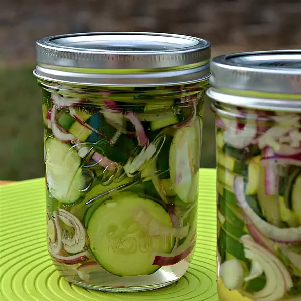

Homemade Refrigerator Pickles

Description
Just pickles!!! These are easy to make, and are a great way to use
vegetables
from the garden.
Ingredients
- 1 cup distilled white vinegar
- 1 tablespoon salt
- 2 cups white sugar
- 6 cups sliced cucumbers
- 1 cup sliced onions
- 1 cup sliced green bell peppers
Steps
- In a medium saucepan over medium heat, bring vinegar, salt and sugar
to a boil.
Boil until the sugar has dissolved, about 10 minutes.
- Place the cucumbers, onions and green bell peppers in a large bowl.
Pour the
vinegar mixture over the vegetables. Transfer to sterile containers
and store in
the refrigerator.